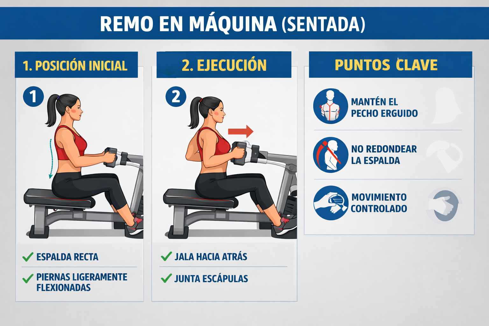
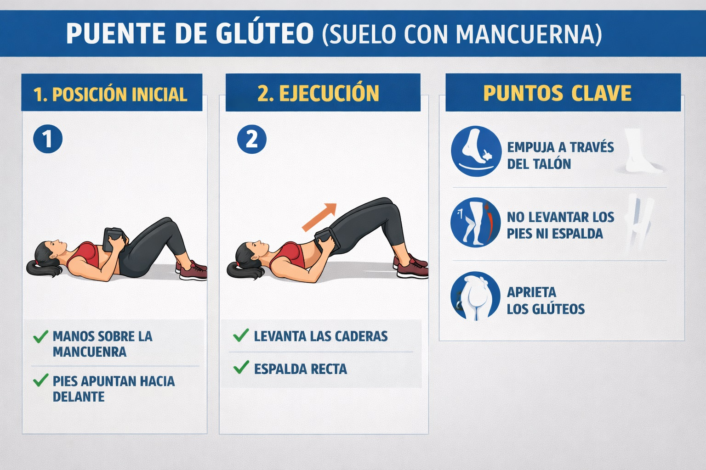

BLOQUE 1 · ESTABILIDAD Y CADENA POSTERIOR
Compensa el exceso de empuje (chaturangas) y protege los isquiotibiales.
Remo en Máquina (Sentada)
Fortalece la espalda alta y mejora la postura para dar clases sin fatiga.
Peso Muerto Rumano con Mancuernas

Refuerza la unión isquiotibial–glúteo, previniendo dolor lumbar y “yoga butt”.
Puente de Glúteo (Suelo con Mancuerna)
Activa glúteos para estabilizar la pelvis en posturas de equilibrio.